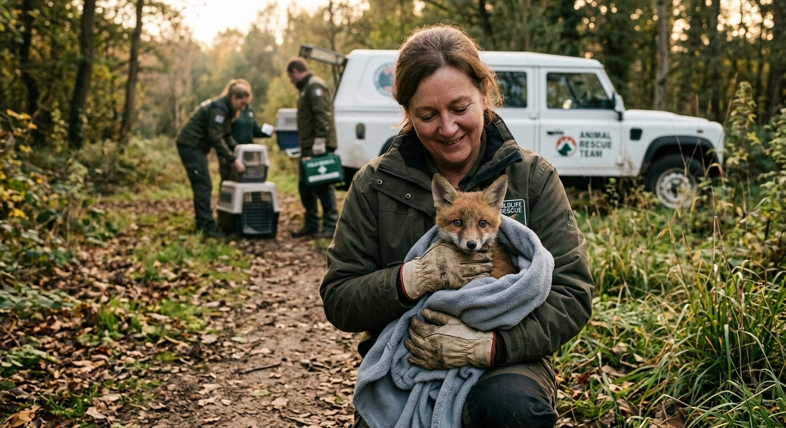

Adopt Me is dedicated to connecting loving families with pets in need. We manage multiple animal shelters and foster homes, ensuring that every rescued animal receives medical care, socialization, and a safe, loving environment while waiting for adoption. Our mission is not just to rehome animals, but to educate and support adopters, advocate for animal welfare, and create a community where pets and people thrive together.

gemini" id = mission>
Dr. Pawla ClawsonChief Veterinarian Experience: 12 years in veterinary medicine, specializing in small animals Qualifications: DVM, Animal Behavior Certification |
Barkley WhiskersOperations Manager Experience: 10 years managing multiple animal shelters Qualifications: BA in Animal Welfare Management |
Furby PawsworthFoster Coordinator Experience: 8 years coordinating foster programs Qualifications: Certified Animal Care Specialist |
Lola FinchAdoption Specialist Experience: 7 years helping families find the right pets Qualifications: BA in Psychology, Certified Animal Behaviorist |
Meowgan FetcherVeterinary Technician Experience: 9 years in veterinary support and medical care Qualifications: CVT, Animal Emergency Care Certification |